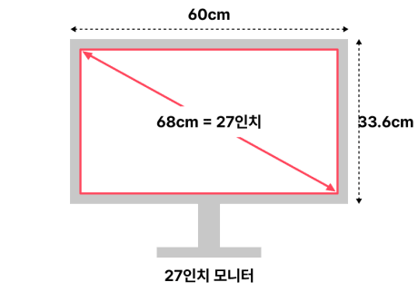
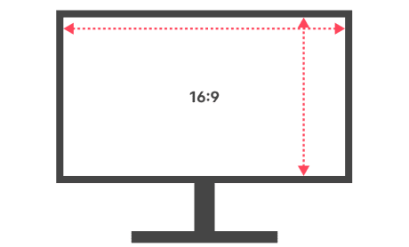

모니터 구매 가이드
모니터와 본체가 일체형인 노트북을 사용하는 경우에도 조금 더 큰 화면을 원하거나 작업효율을 높이기 위한 듀얼 화면이 필요한 경우에도 모니터를 많이 사용합니다.
컴퓨터를 사용하는 동안 가장 가까이서 가장 오랫동안 시선이 머무는 장치인만큼 눈이 편안하고, 작업 효율을 높여줄 좋은 모니터를 고르는 것도 중요합니다.
또한 모니터는 용도와 취향에 따라 적합한 제품이 달라질 수 있는 대표적인 IT 기기이기 때문에 각자의 기준에 맞게 알맞은 선택이 필요한 아이템입니다.
내 눈과 작업효율을 위한, 나에게 딱 맞는 좋은 모니터 고르는 법을 노써치에서 하나씩 알려드릴게요.
화면
크기 / 비율 / 패널형태
1. 화면
가장 대중적인 27인치 한눈에 잘 들어오는 24인치 큰 화면을 선호한다면 32인치를 추천
-
모니터의 크기는 대각선 길이를 인치로 표기
 -
현재 대부분의 모니터는
24인치~32인치 사이
몇 년 전만 하더라도 17~20인치면 보통 수준이었지만, 현재는 24인치~32인치 사이의 제품이 가장 선호되고 있습니다. 실제 현재 판매되는 모니터 중 70%가 해당 크기입니다. -
특수한 용도가 아니라면
가장 무난한 27인치를 추천
범위를 좁혔다면 이제 하나의 크기를 골라야 하는데, 이때 고려하면 좋은 점이 바로 모니터를 주로 사용할 작업의 종류와 성격입니다. -
FPS/AOS 게임 전용이라면
24인치가 유리함
한눈에 들어오는 화면에서 집중적인 작업을 주로 할 경우 한 단계 아래 24인치를 선택하는 것이 좋습니다. -
여러 개의 창을 띄우거나
멀티미디어 작업용이라면 32인치
반면 여러 개의 창을 띄우거나, 상하좌우로 화면을 폭넓게 살피는 것이 중요한 경우 32인치를 선택하는 것이 좋은데, 대표적으로 영화 감상이나 영상 편집, *RPG 게임 등에 적합합니다. 큰 크기로 좀 더 여유롭게 화면과 그래픽을 즐길 수 있고, 더 많은 창과 정보를 통해 작업 효율도 올라가기 때문입니다. -
작업효율을 높이려면
듀얼모니터 구성도 고려할 것
하나의 컴퓨터 본체에 2대 이상의 모니터를 연결하는 것을 모니터 숫자에 따라 듀얼, 트리플 모니터 구성이라고 부릅니다. -
일반적인 책상에선 27인치 2개가 적당
큰 모니터+작은 모니터 조합도 좋음
듀얼 모니터 구성을 고려한다면 화면 크기와 함께 책상의 가로길이도 확인하는 것이 좋은데요, 최근 듀얼모니터로 가장 대중적인 크기는 27인치(가로길이 620mm)로, 대부분의 가정이나 사무용으로 사용하는 가로 1,200mm 책상에 평행하게 나란히 설치할 경우 모니터 끝부분이 책상 끝을 넘어갈 수 있습니다. -
다른 제품으로 듀얼 모니터를 구성하는 경우
픽셀 피치를 비슷하게 맞추는 걸 추천
업무용으로 사용하려고 하는데 책상이 넓지 않아 크기가 다른 모니터를 사용하거나, 새로운 모니터와 기존 모니터를 함께 사용하시는 경우에는 모니터의 *픽셀 피치가 비슷한 제품을 구매하는 것이 화면 간의 이질감을 덜 느낄 수 있습니다. -
듀얼모니터를 깔끔하게 배치하고 싶다면
베젤이 얇은 제품을 선택
베젤은 디스플레이 장치의 테두리를 뜻하는 용어로, 최근 출시되는 모니터는 이너 베젤과 아웃 베젤이 함께 명시되어 있는데요, 이 둘의 길이를 합친 값이 모니터의 총 베젤이며, 얇으면 얇을수록 모니터 사이의 간격이 줄어들어 통일감 있는 하나의 화면처럼 느낄 수 있어 만족감이 매우 큽니다.
실제 우리가 보는 화면의 크기는 가로와 세로의 길이를 곱한 면적의 개념이지만, 표준단위는 '화면 대각선 길이'를 센티미터(cm)나 인치(inch)로 표기합니다.
*1inch=2.54cm
따라서 서브 모니터(21인치 이하)나 TV 대용/회의실 비치(35인치 이상) 등 특정한 용도가 아닌 개인용 일반 모니터라면 24인치~32인치 범위에서 선택하는 것을 추천드립니다.
특별한 용도나 선호하는 크기가 없다면 가장 일반적으로 추천하는 크기는 27인치입니다. 충분한 크기의 화면에 가격도 비싸지 않아 화면크기와 가격의 밸런스가 가장 좋은 크기입니다.
현재 각 제조사에서 가장 집중하고 있는 크기로, 제품의 수와 종류가 가장 다양하여 크기 외에 가격/화질/디자인/부가 기능 등 선택의 폭도 가장 넓습니다.
모니터를 자주 사용해보지 않은 경우라면 구매 후 '크기가 생각보다 크다'라고 느낄 수 있는데, 하루 이틀만 사용해도 금방 적응되며, 사용자의 눈과 50cm의 거리만 확보된다면 시야에도 충분히 들어오는 크기입니다.
27인치의 크기도 일반적으로 사용한다면 문제가 없지만, 전체 화면을 동시에 보면서 빠르게 반응해야 한다면 화면의 크기를 줄여서 시야를 집중하는 것이 유리합니다.
대표적인 예로 배틀그라운드나 LOL 같은 *FPS/RTS 게임이 이에 해당하는데, 이런 게임 대회의 공식 모니터로 24인치 제품이 사용되고 있기도 합니다.
*FPS 게임 : First Person Shooter(1인치 슈팅 게임), 서든어택/배틀그라운드 등
*RTS 게임 : Rear-Time Strategy(실시간 전략게임), LOL/스타크래프트 등
다만, 게임을 전문적으로 하는 프로게이머가 아니라면, 시야나 반응속도보다 게임의 몰입감을 위해 27인치나 그 이상의 큰 크기를 선호하는 분들도 많습니다.
*RPG 게임 : Role Playing Game(롤플레잉 게임), 로스트아크/블레이드앤소울 등
또한, 책상의 크기가 커서 시청 거리가 60~70cm 이상이거나, 시력이 좋지 않아 글자 크기 설정을 권장보다 크게 사용해야 하는 경우에도 32인치가 효과적일 수 있습니다.
이 외에도 예산과 공간의 여유가 있다면 32인치의 큰 화면을 선택하면 확실히 만족도가 올라가기도 합니다.
모니터 가격이 전반적으로 낮아지고 케이블만 꽂으면 큰 번거로움 없이 쉽게 연결할 수 있으며, 작업 효율을 높이는 데 큰 도움이 되어 요즘엔 일반적인 가정이나 사무실에서도 흔히 선택하는 방식입니다.
하지만, 듀얼모니터를 구성할 때 편안한 시야감과 정확한 화질을 위해 각도를 사람 방향으로 조절하기 때문에, 1,200mm의 책상에서 27인치 듀얼모니터를 설치해도 책상 끝을 넘어가지 않는 경우가 대부분입니다.
만약 32인치 대화면을 사용하고 싶으시다면 서로 다른 크기의 제품으로 구성해 보는 것도 괜찮은 방법인데요, 사람의 시야는 듀얼 모니터를 놓았을 때 한눈에 모든 화면을 보기가 어려워, 하나의 모니터를 메인으로 보고 나머지를 서브용으로 사용하게 되는 경우가 많기 때문입니다.
따라서, 따라서 듀얼 모니터 구성 시에는 개인의 선호에 따라 같은 크기 2개 혹은 큰 모니터+작은 모니터 조합 중 선택하는 것이 좋으며,
1. 27인치x2개
2. 32인치+24~27인치 조합을 추천드립니다.
(32인치+24~27인치 조합에서 24~27인치 모니터를 세로로 사용하면 웹서핑/문서작업 정보가 한눈에 들어오기 때문에 매우 편리합니다.)
픽셀피치는 화면크기와 해상도에 따라 달라지는데요, 가장 추천드리는 크기/해상도 조합은 32인치 QHD와 24인치 FHD 제품이며, 이 외에도 픽셀피치가 크게 차이 나지 않는다면 시청하시는 데 크게 문제없습니다.
*픽셀피치 : 모니터 화면을 구성하는 픽셀(화소)의 간격
다만, 일부 제조사의 경우 이너 베젤이 있음에도 아웃 베젤의 길이만 명시하는 경우가 있기 때문에, 화면이 켜져 있는 후기 사진을 통해 이 이너 베젤의 두께를 확인하신 뒤 구매하시는 것을 추천드립니다.
2. 화면 비율
대부분 콘텐츠에 최적화된 16:9 듀얼모니터의 대안이라면 21:9 추천
-
16:9가 가장 일반적인 화면 비율 24/27/32인치 모니터는 대부분 16:9
 -
소제목
본문
-
소제목
본문
-
소제목
본문
-
소제목
본문
현재 가장 많이 구매하는 24/27/32인치 모니터는 대부분 16:9의 화면 비율입니다. 16:9 비율은 디지털 방송이 시작된 이후 현재까지 가장 표준으로 자리 잡은 비율로, 현재에도 TV, 게임, 영상 등 대부분의 콘텐츠가 이 비율에 최적화 되어 만들어지기 때문에 일반적인 모니터 구입시 가장 보편적으로 선택할 수 있는 비율입니다.
1. 중제목
설명
-
소제목
본문
화질
1. 중제목
설명
-
소제목
본문
사용편의
1. 중제목
설명
-
소제목
본문